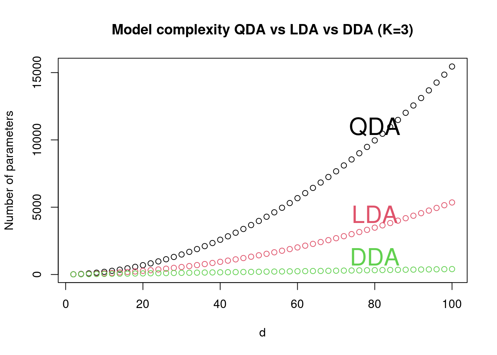

4 Supervised learning and classification
4.1 Introduction
4.1.1 Supervised learning vs. unsupervised learning
Unsupervised learning:
Starting point:
- unlabeled data \(\boldsymbol x_1, \ldots, \boldsymbol x_n\).
Aim: find labels \(y_1, \ldots, y_n\) to attach to each sample \(\boldsymbol x_i\).
For discrete labels \(y\) unsupervised learning is called clustering.
Supervised learning:
Starting point:
- labeled training data: \(\{\boldsymbol x_1^{train}, y_1^{train}\}\), \(\ldots\), \(\{\boldsymbol x_n^{train}, y_n^{train} \}\)
- In addition, we have unlabeled test data: \(\boldsymbol x^{test}\)
Aim: use training data to learn a function \(f(\boldsymbol x)\) to predict the label corresponding to the test data. The predictor function may provide a soft (probabilistic) assignment or a hard assignment.
For \(y\) discrete supervised learning is called classification. For continuous \(y\) the label is called response and supervised learning becomes regression.
Thus, supervised learning is a two-step procedure:
- learn predictor function using only the training data
- predict the label \(y^{test}\) for the test data \(\boldsymbol x^{test}\)
4.1.2 Terminology
The function \(f(\boldsymbol x)\) that predicts the class \(y\) is called a classifier.
There are many types of classifiers, we focus here primarily on probabilistic classifiers (i.e. those that output the predicted class along with a probability).
The challenge is to find a classifier that explains the current training data well and that also generalises well to future unseen data. Note that it is relatively easy to find a predictor that explains the training data but especially in high dimensions (i.e. with many predictors) there is often overfitting and then the predictor does not generalise well!
The classifier function describes the decision boundary between the classes:

In general, simple decision boundaries are preferred over complex decision boundaries to avoid overfitting!
Some commonly used probabilistic methods for classifications:
- QDA (quadratic discriminant analysis)
- LDA (linear discriminant analysis)
- DDA (diagonal discriminant analysis),
- Naive Bayes classification
- logistic regression
Common non-probabilistic methods include:
- SVM (support vector machine),
- random forest
- neural networks
Depending on how the classifiers are trainined there are many variations of the above methods, e.g. Fisher discriminant analysis, regularised LDA, shrinkage disciminant analysis etc.
4.2 Bayesian discriminant rule or Bayes classifier
Same setup as with mixture models:
- \(K\) groups with \(K\) prespecified
- each group has its own distribution \(F_k\) with own parameters \(\boldsymbol \theta_k\)
- the density of each class is \(f_k(\boldsymbol x) = f(\boldsymbol x| k)\).
- prior probability of group \(k\) is \(\text{Pr}(k) = \pi_k\) with \(\sum_{k=1}^K \pi_k = 1\)
- marginal density is the mixture \(f(\boldsymbol x) = \sum_{k=1}^K \pi_k f_k(\boldsymbol x)\)
The posterior probability of group \(k\) is then \[ \text{Pr}(k | \boldsymbol x) = \frac{\pi_k f_k(\boldsymbol x) }{ f(\boldsymbol x)} \]
The discriminant function is the logarithm of the posterior probability: \[ d_k(\boldsymbol x) = \log \text{Pr}(k | \boldsymbol x) = \log(\pi_k) + \log(f_k(\boldsymbol x) ) - \log(f(\boldsymbol x)) \] Since we use \(d_k\) to compare the different classes \(k\) we can simplify the discriminant function by dropping all constant terms that do not depend on \(k\) — in the above this is the term \(\log(f(\boldsymbol x))\). Hence we get for the Bayes discriminant function \[ d_k(\boldsymbol x) = \log(\pi_k) + \log(f_k(\boldsymbol x) ) \]
This provides us with the probability of each class given the test data \(\boldsymbol x\). For subsequent “hard” classification we need to use a decision rule, such as selecting the group \(\hat{k}\) for that which the group probability / value of discriminant function is maximised \[ \hat{k} = \arg \max_k d_k(\boldsymbol x) \,. \] with \(d_{\max} = d_{\hat{k}}(\boldsymbol x)\).
The discriminant functions \(d_k(\boldsymbol x)\) can be mapped back to the probabilistic class assignment by using the softargmax function (also known as softmax function): \[ \text{Pr}(k | \boldsymbol x) = \frac{\exp( d_k(\boldsymbol x) )}{\sum_{c=1}^K \exp( d_c(\boldsymbol x) ) } = \frac{\exp( d_k(\boldsymbol x) - d_{\max} ) }{\sum_{c=1}^K \exp( d_c(\boldsymbol x) - d_{\max} ) } \] Note the second form avoids numerical overflow problems when computing the exponential by standardising the maximum of the discriminant functions to zero.
You have already encountered the Bayes classifier in the EM algorithm to predict the state of the latent variables. In a simplied versions it also plays a role in the \(K\)-means algorithm (see previous Chapter) and in the likelihood classifier (cf. Worksheet 7).
4.3 Normal Bayes classifier
4.3.1 Quadratic discriminant analysis (QDA) and Gaussian assumption
Quadratic discriminant analysis (QDA) is a special case of the Bayes classifier when all densities are multivariate normal with \(f_k(\boldsymbol x) = N(\boldsymbol x| \boldsymbol \mu_k, \boldsymbol \Sigma_k)\).
This leads to the discriminant function for QDA: \[ d_k^{QDA}(\boldsymbol x) = -\frac{1}{2} (\boldsymbol x-\boldsymbol \mu_k)^T \boldsymbol \Sigma_k^{-1} (\boldsymbol x-\boldsymbol \mu_k) -\frac{1}{2} \log \det(\boldsymbol \Sigma_k) +\log(\pi_k) \]
There are a number of noteworthy things here:
- Again terms are dropped that do not depend on \(k\), such as \(-\frac{d}{2}\log( 2\pi)\).
- Note the appearance of the Mahalanobis distance between \(\boldsymbol x\) and \(\boldsymbol \mu_k\) in the last term — recall \(d^{Mahalanobis}(\boldsymbol x, \boldsymbol \mu| \boldsymbol \Sigma) = (\boldsymbol x-\boldsymbol \mu)^T \boldsymbol \Sigma^{-1} (\boldsymbol x-\boldsymbol \mu)\).
- The QDA discriminant function is quadratic in \(\boldsymbol x\) - hence its name!
This implies that the decision boundaries for QDA classification are quadratic (i.e. parabolas in two dimensional settings).
For Gaussian models specifically it can useful be to multiply the discriminant function by -2 to get rid of the factor \(-\frac{1}{2}\), but note that in that case we then need to find the minimum of the discriminant function rather than the maximum: \[ d_k^{QDA (v2)}(\boldsymbol x) = (\boldsymbol x-\boldsymbol \mu_k)^T \boldsymbol \Sigma_k^{-1} (\boldsymbol x-\boldsymbol \mu_k) + \log \det(\boldsymbol \Sigma_k) -2 \log(\pi_k) \] In the literature you will find both versions of Gaussian discriminant functions so you need to check carefully which convention is used. In the following we will use the first version only.
4.3.2 Linear discriminant analysis (LDA)
LDA is a special case of QDA, with the assumption of common overall covariance across all groups: \(\boldsymbol \Sigma_k = \boldsymbol \Sigma\).
This leads to a simplified discriminant function: \[ d_k^{LDA}(\boldsymbol x) = -\frac{1}{2} (\boldsymbol x-\boldsymbol \mu_k)^T \boldsymbol \Sigma^{-1} (\boldsymbol x-\boldsymbol \mu_k) +\log(\pi_k) \] Note that term containing the log-determinant is now gone, and that LDA is essentially now a method that tries to minimize the Mahalanobis distance (while taking also into account the prior class probabilities).
The above function can be further simplified, by noting that the quadratic term \(\boldsymbol x^T \boldsymbol \Sigma^{-1} \boldsymbol x\) does not depend on \(k\) and hence can be dropped: \[ \begin{split} d_k^{LDA}(\boldsymbol x) &= \boldsymbol \mu_k^T \boldsymbol \Sigma^{-1} \boldsymbol x- \frac{1}{2}\boldsymbol \mu_k^T \boldsymbol \Sigma^{-1} \boldsymbol \mu_k + \log(\pi_k) \\ &= \boldsymbol b^T \boldsymbol x+ a \end{split} \] Thus, the LDA discriminant function is linear in \(\boldsymbol x\), and hence the resulting decision boundaries are linear as well (i.e. straight lines in two-dimensional settings).
Comparison of decision boundary of LDA (left) compared with QDA (right):

Note that logistic regression (cf. GLM module) takes on exactly the above linear form and is indeed closely linked with the LDA classifier.
4.3.3 Diagonal discriminant analysis (DDA)
In DDA we assume the same setting as LDA, but now we simplify even further by assuming a diagonal covariance containing only the variances: \[ \boldsymbol \Sigma= \boldsymbol V= \begin{pmatrix} \sigma^2_{1} & \dots & 0\\ \vdots & \ddots & \vdots \\ 0 & \dots & \sigma^2_{d} \end{pmatrix} \] This simplifies the inversion of \(\boldsymbol \Sigma\) as \[ \boldsymbol \Sigma^{-1} = \boldsymbol V^{-1} = \begin{pmatrix} \sigma^{-2}_{1} & \dots & 0\\ \vdots & \ddots & \vdots \\ 0 & \dots & \sigma^{-2}_{d} \end{pmatrix} \] and leads to the discriminant function \[ \begin{split} d_k^{DDA}(\boldsymbol x) &= \boldsymbol \mu_k^T \boldsymbol V^{-1} \boldsymbol x- \frac{1}{2}\boldsymbol \mu_k^T \boldsymbol V^{-1} \boldsymbol \mu_k + \log(\pi_k) \\ &= \sum_{j=i}^d \frac{\mu_{k,j} x_j - \mu_{k,j}^2/2}{\sigma_d^2} + \log(\pi_k) \end{split} \] As special case of LDA, the DDA classifier is a linear classifier.
The Bayes classifier (using any distribution) assuming uncorrelated predictors is also known as the naive Bayes classifier.
Hence, DDA is a naive Bayes classifier assuming underlying Gaussian distributions.
However, don’t let you misguide because of the name “naive”: in fact DDA and other “naive” Bayes classfier are often very effective classifiers, especially in high-dimensional settings!
4.4 The training step — learning QDA, LDA and DDA classifiers from data
4.4.1 Number of model parameters
In order to predict the class for new data using any of the above discriminant functions we need to first learn the underlying parameters from the training data \(\boldsymbol x_i^{\text{train}}\) and \(y_i^{\text{train}}\):
- For QDA, LDA and DDA we need to learn \(\pi_1, \ldots, \pi_K\) with \(\sum_{k=1}^K \pi_k = 1\) and the mean vectors \(\boldsymbol \mu_1, \ldots, \boldsymbol \mu_K\)
- For QDA we additionally require \(\boldsymbol \Sigma_1, \ldots, \boldsymbol \Sigma_K\)
- For LDA we need \(\boldsymbol \Sigma\)
- For DDA we estimate \(\sigma^2_1, \ldots, \sigma^2_d\).
Overall, the total number of parameters to be estimated when learning the discriminant functions from training data is as follows:
- QDA: \(K-1+ K d + K \frac{d(d-1)}{2}\)
- LDA: \(K-1+ K d + \frac{d(d-1)}{2}\)
- DDA: \(K-1+ K d + d\)

4.4.2 Estimating the discriminant / predictor function
For QDA, LDA and DDA we learn the predictor by estimating the parameters of the discriminant function from the training data.
4.4.2.1 Large sample size
If the sample size of the training data set is sufficiently large compared to the model dimensions we can use maximum likelihood to estimate the model parameters. To be able use ML we need a larger sample size for QDA and LDA (because full covariances need to be estimated) but for DDA relatively small sample size can be sufficient (which explains why “naive” Bayes methods are very popular in practise).
To obtain the parameters estimates we use the known labels \(y_i^{\text{train}}\) to sort the samples \(\boldsymbol x_i^{\text{train}}\) into the corresponding classes, and then apply the standard ML estimators. Let \(G_k =\{i: y_i^{\text{train}}=k \}\) be the set of all indices of training sample belonging to group \(k\), \(n_k\) the sample size in group \(k\)
The ML estimates of the class probabilities are the frequencies \[ \hat{\pi}_k = \frac{n_k}{n} \] and the ML estimate of the group means \(k=1, \ldots, K\) are \[ \hat{\boldsymbol \mu}_k = \frac{1}{n_k} \sum_{i \in g_k} \boldsymbol x_i^{\text{train}} \, . \] The ML estimate of the global mean \(\boldsymbol \mu_0\) (i.e. if we assume there is only a single class and ignore the group labels) is \[ \hat{\boldsymbol \mu}_0 = \frac{1}{n} \sum_{i=1}^n \boldsymbol x_i^{\text{train}} = \sum_{k=1}^K \hat{\pi}_k \hat{\boldsymbol \mu}_k \] Note the global mean is identical to the pooled mean (i.e. weighted average of the individual group means).
The ML estimates for the covariances \(\boldsymbol \Sigma_k\) for QDA are \[ \widehat{\boldsymbol \Sigma}_k = \frac{1}{n_k} \sum_{i \in g_k} ( \boldsymbol x_i^{\text{train}} -\hat{\boldsymbol \mu}_k) ( \boldsymbol x_i^{\text{train}} -\hat{\boldsymbol \mu}_k)^T \]
In order to get the ML estimate of the pooled variance \(\boldsymbol \Sigma\) for use with LDA we compute \[ \widehat{\boldsymbol \Sigma} = \frac{1}{n} \sum_{k=1}^K \sum_{i \in g_k} ( \boldsymbol x_i^{\text{train}} -\hat{\boldsymbol \mu}_k) ( \boldsymbol x_i^{\text{train}} -\hat{\boldsymbol \mu}_k)^T = \sum_{k=1}^K \hat{\pi}_k \widehat{\boldsymbol \Sigma}_k \]
Note that the pooled variance \(\boldsymbol \Sigma\) differs (substantially!) from the global variance \(\Sigma_0\) that results from simply ignoring class labels and that is computed as \[ \widehat{\boldsymbol \Sigma}_0^{ML} = \frac{1}{n} \sum_{i =1}^n ( \boldsymbol x_i^{\text{train}} -\hat{\boldsymbol \mu}_0) ( \boldsymbol x_i^{\text{train}} -\hat{\boldsymbol \mu}_0)^T \] You will recognise the above from the variance decomposion in mixture models, with \(\boldsymbol \Sigma_0\) being the total variance and the pooled \(\boldsymbol \Sigma\) the unexplained/with-in group variance.
4.4.2.2 Small sample size
If the dimension \(d\) is large compared to the sample size then the number of parameters in the predictor function grows fast. Especially QDA but also LDA is data hungry and ML estimation becomes an ill-posed problem. As discussed in Section 1.5 in this instance we need to use a regularised estimator for the covariance(s) based, e.g., on penalised ML, Bayesian learning, shrinkage estimation. This also ensures that the estimated covariance matrices are positive definite (which is automatically guaranteed only for DDA if all variances are positive). Furthermore, in small sample setting it is advised to reduce the number of parameters, therefore using LDA or DDA is preferred over QDA. This can also prevent overfitting and lead to a predictor that generalises better.
To analyse high-dimensional data in the worksheets we will employ a regularised version of LDA and DDA using Stein-type shrinkage estimation as discussed in Section 1.5 and implemented in the R package “sda”.
4.4.3 Comparison of estimated decision boundaries: LDA vs. QDA
We compare two simple scenarios using simulated data.
Non-nested case (\(K=4\)):

Note the linear decision boundaries for LDA!
Nested case (\(K=2\)):

There is no linear classifier that can seperate two nested classes!
4.5 Goodness of fit and variable ranking
As in linear regression (cf. “Statistical Methods” module) we are interested in finding out whether the fitted mixture model is an appropriate model, and which particular predictor(s) \(x_j\) from \(\boldsymbol x=(x_1, \ldots, x_d)^T\) are responsible prediction the outcome, i.e. for categorizing a sample into group \(k\).
In order to study these problem it is helpful to rewrite the discriminant function to highlight the influence (or importance) of each predictor.
We focus on linear methods (LDA and DDA) and first look at the simple case \(K=2\) and then generalise to more than two groups.
4.5.1 LDA with \(K=2\) classes
For two classes using the LDA discriminant rule will choose group \(k=1\) if \(d_1^{LDA}(\boldsymbol x) > d_2^{LDA}(\boldsymbol x)\), or equivalently, if \[ \Delta_{12}^{LDA} = d_1^{LDA}(\boldsymbol x) - d_2^{LDA}(\boldsymbol x) > 0 \] Since \(d_k(\boldsymbol x)\) is the log-posterior (plus/minus identical constants) \(\Delta^{LDA}\) is in fact the log-posterior odds of class 1 versus class 2 (see Statistical Methods, Bayesian inference).
The difference \(\Delta_{12}^{LDA}\) is \[ \underbrace{ \Delta_{12}^{LDA}}_{\text{log posterior odds}} = \underbrace{(\boldsymbol \mu_1 -\boldsymbol \mu_2)^T \boldsymbol \Sigma^{-1} \left(\boldsymbol x- \frac{\boldsymbol \mu_1+\boldsymbol \mu_2}{2}\right)}_{\text{log Bayes factor } \log B_{12}} + \underbrace{\log\left( \frac{\pi_1}{\pi_2} \right)}_{\text{log prior odds}} \] Note that since we only consider simple non-composite models here the log-Bayes factor is identical with the log-likelihood ratio!
The log Bayes factor \(\log B_{12}\) is known as the weight of evidence in favour of \(F_1\) given \(\boldsymbol x\). The expected weight of evidence assuming \(\boldsymbol x\) is indeed from \(F_1\) is the Kullback-Leibler discrimination information in favour of group 1, i.e. the KL divergence of from distribution \(F_2\) to \(F_1\): \[ \text{E}_{F_1} ( \log B_{12} ) = KL(F_1 || F_2) = \frac{1}{2} (\boldsymbol \mu_1 -\boldsymbol \mu_2)^T \boldsymbol \Sigma^{-1} (\boldsymbol \mu_1 -\boldsymbol \mu_2) = \frac{1}{2} \Omega^2 \] This yields, apart of a scale factor, a population version of the Hotelling \(T^2\) statistic defined as \[T^2 = c^2 (\hat{\boldsymbol \mu}_1 -\hat{\boldsymbol \mu}_2)^T \hat{\boldsymbol \Sigma}^{-1} (\hat{\boldsymbol \mu}_1 -\hat{\boldsymbol \mu}_2)\] where \(c = (\frac{1}{n_1} + \frac{1}{n_2})^{-1/2} = \sqrt{n \pi_1 \pi_2}\) is a sample size dependent factor (for \(\text{SD}(\hat{\boldsymbol \mu}_1 - \hat{\boldsymbol \mu}_2)\)). \(T^2\) is a measure of fit of the underlying two-component mixture.
Using the whitening transformation with \(\boldsymbol z= \boldsymbol W\boldsymbol x\) and \(\boldsymbol W^T \boldsymbol W= \boldsymbol \Sigma^{-1}\) we can rewrite the log Bayes factor as \[ \begin{split} \log B_{12} &= \left( (\boldsymbol \mu_1 -\boldsymbol \mu_2)^T \boldsymbol W^T \right)\, \left(\boldsymbol W\left(\boldsymbol x- \frac{\boldsymbol \mu_1+\boldsymbol \mu_2}{2}\right) \right) \\ &=\boldsymbol \omega^T \boldsymbol \delta(\boldsymbol x) \end{split} \] i.e. as the product of two vectors:
- \(\boldsymbol \delta(\boldsymbol x)\) is the whitened \(\boldsymbol x\) (centered around average means) and
- \(\boldsymbol \omega= (\omega_1, \ldots, \omega_d)^T = \boldsymbol W(\boldsymbol \mu_1 -\boldsymbol \mu_2)\) gives the weight of each whitened component \(\boldsymbol \delta(\boldsymbol x)\) in the log Bayes factor.
A large positive or negative value of \(\omega_j\) indicates that the corresponding whitened predictor is relevant for choosing a class, whereas small values of \(\omega_j\) close to zero indicate that the corresponding ZCA whitened predictor is unimportant. Furthermore, \(\boldsymbol \omega^T \boldsymbol \omega= \sum_{j=1}^d \omega_j^2 = (\boldsymbol \mu_1 -\boldsymbol \mu_2)^T \boldsymbol \Sigma^{-1} (\boldsymbol \mu_1 -\boldsymbol \mu_2) = \Omega^2\), i.e. the squared \(\omega_j^2\) provide a component-wise decomposition of the overall fit \(\Omega^2\).
Choosing ZCA-cor as whitening transformation with \(\boldsymbol W=\boldsymbol P^{-1/2} \boldsymbol V^{-1/2}\) we get \[ \boldsymbol \omega^{ZCA-cor} = \boldsymbol P^{-1/2} \boldsymbol V^{-1/2} (\boldsymbol \mu_1 -\boldsymbol \mu_2) \] A better understanding of \(\boldsymbol \omega^{ZCA-cor}\) is provided by comparing with the two-sample \(t\)-statistic \[ \hat{\boldsymbol \tau} = c \hat{\boldsymbol V}^{-1/2} (\hat{\boldsymbol \mu}_1 - \hat{\boldsymbol \mu}_2) \] With \(\boldsymbol \tau\) the population version of \(\hat{\boldsymbol \tau}\) we can define \[\boldsymbol \tau^{adj} = \boldsymbol P^{-1/2} \boldsymbol \tau= c \boldsymbol \omega^{ZCA-cor}\] as correlation-adjusted \(t\)-scores (cat scores). With \(({\hat{\boldsymbol \tau}}^{adj})^T {\hat{\boldsymbol \tau}}^{adj} = T^2\) we can see that the cat scores offer a component-wise decomposition of Hotelling’s \(T^2\).
Note the choice of ZCA-cor whitening is to ensure that the whitened components are interpretable and stay maximally correlated to the original variables. However, you may also choose for example PCA whitening in which case the \(\boldsymbol \omega^T \boldsymbol \omega\) provide the variable importance for the PCA whitened variables.
For DDA, which assumes that correlations among predictors vanish, i.e. \(\boldsymbol P= \boldsymbol I_d\), we get \[ \Delta_{12}^{DDA} =\underbrace{ \left( (\boldsymbol \mu_1 -\boldsymbol \mu_2)^T \boldsymbol V^{-1/2} \right)}_{\text{ } c^{-1} \boldsymbol \tau^T }\, \underbrace{ \left( \boldsymbol V^{-1/2} \left(\boldsymbol x- \frac{\boldsymbol \mu_1+\boldsymbol \mu_2}{2}\right) \right) }_{\text{centered standardised predictor}}+ \log\left( \frac{\pi_1}{\pi_2} \right) \\ \] Similarly as above, the \(t\)-score \(\boldsymbol \tau\) determines the impact of the standardised predictor in \(\Delta^{DDA}\).
Consequently, in DDA we can rank predictors by the squared \(t\)-score. Recall that in standard linear regression with uncorrelated predictors we can find the most important predictors by ranking the squared marginal correlations – ranking by (squared) \(t\)-scores in DDA is the exact analogy but for discrete response.
4.5.2 Multiple classes
For more than two classes we need to refer to the so-called pooled centroids formulation of DDA and LDA (introduced by Tibshirani 2002).
The pooled centroid is given by \(\boldsymbol \mu_0 = \sum_{k=1}^K \pi_k \boldsymbol \mu_k\) — this is the centroid if there would be only a single class. The corresponding probability (for a single class) is \(\pi_0=1\) and the distribution is called \(F_0\).
The LDA discriminant function for this “group 0” is \[ d_0^{LDA}(\boldsymbol x) = \boldsymbol \mu_0^T \boldsymbol \Sigma^{-1} \boldsymbol x- \frac{1}{2}\boldsymbol \mu_0^T \boldsymbol \Sigma^{-1} \boldsymbol \mu_0 \] and the log posterior odds for comparison of group \(k\) with the pooled group \(0\) is \[ \begin{split} \Delta_k^{LDA} &= d_k^{LDA}(\boldsymbol x) - d_0^{LDA}(\boldsymbol x) \\ &= \log B_{k0} + \log(\pi_k) \\ &= \boldsymbol \omega_k^T \boldsymbol \delta_k(\boldsymbol x) + \log(\pi_k) \end{split} \] with \[ \boldsymbol \omega_k = \boldsymbol W(\boldsymbol \mu_k - \boldsymbol \mu_0) \] and \[ \boldsymbol \delta_k(\boldsymbol x) = \boldsymbol W(\boldsymbol x- \frac{\boldsymbol \mu_k +\boldsymbol \mu_0}{2} ) \] The expected log Bayes factor is \[ \text{E}_{F_k} ( \log B_{k0} )= KL(F_k || F_0) = \frac{1}{2} (\boldsymbol \mu_k -\boldsymbol \mu_0)^T \boldsymbol \Sigma^{-1} (\boldsymbol \mu_k -\boldsymbol \mu_0) = \frac{1}{2} \Omega_k^2 \]
With scale factor \(c_k = (\frac{1}{n_k} - \frac{1}{n})^{-1/2} = \sqrt{n \frac{\pi_k}{1-\pi_k}}\) (for \(\text{SD}(\hat{\boldsymbol \mu}_k-\hat{\boldsymbol \mu}_0)\), with the minus sign before \(\frac{1}{n}\) due to correlation between \(\hat{\boldsymbol \mu}_k\) and pooled mean \(\hat{\boldsymbol \mu}_0\)) we get as correlation-adjusted \(t\)-score for comparing mean of group \(k\) with the pooled mean \[ \boldsymbol \tau_k^{adj} = c_k \boldsymbol \omega_k^{ZCA-cor} \,. \]
For the two class case (\(K=2\)) we get with \(\boldsymbol \mu_0 = \pi_1 \boldsymbol \mu_1 + \pi_2 \boldsymbol \mu_2\) for the mean difference \((\boldsymbol \mu_1 - \boldsymbol \mu_0) = \pi_2 (\boldsymbol \mu_1 - \boldsymbol \mu_2)\) and with \(c_1 = \sqrt{n \frac{\pi_1}{\pi_2}}\) this yields \[ \boldsymbol \tau_1^{adj} = \sqrt{n \pi_1 \pi_2 } \boldsymbol P^{-1/2} \boldsymbol V^{-1/2} (\boldsymbol \mu_1 - \boldsymbol \mu_2) , \] i.e. the exact same score as in the two-class setting.
4.6 Variable selection and cross-validation
In the previous we saw that in DDA the natural score for ranking features with regard to their relevance in separating the classes is the (squared) \(t\)-score, and for LDA a whitened version such as the squared correlation-adjusted \(t\)-score (based on ZCA-cor whitening) may be used. Once such a ranking has been established the question of a suitable cutoff arises, i.e. how many features need (or should) be retained in a model.
For large and high-dimensional models feature selection can also be viewed as a form of regularisation and also dimension reduction. Specifically, there may be many variables/ features that do no contribute to the class prediction. Despite having in principle no effect on the outcome the presence of these “null variables” can nonetheless deterioriate (sometimes dramatically!) the overall predictive accuracy of a trained predictor, because they add noise and increase the model dimension. Therefore, variables that do not contribute to prediction should be filtered out in order to be able to construct good prediction models and classifiers.
4.6.1 Choosing a threshold by multiple testing using false discovery rates
The most simple way to determine a cutoff threshold is to use a standard technique for multiple testing.
For each predictor variable \(x_1, \ldots, x_d\) we have a corresponding test statistic measuring the influence of this variable on the response, for example the the \(t\)-scores and related statistics discussed in the previous section. In addition to providing an overall ranking the set of all these statistics can be used to determine a suitable cutoff by trying to separate two populations of predictor variables:
- “Null” variables that do not contribute to prediction
- “Alternative” variables that are linked to prediction
As discussed in the “Statistical Methods” module last term (Part 2 - Section 8) this can be done as follows:
The distribution of the observed test statistics \(z_i\) is assumed to follow a two-component mixture where \(F_0(z)\) and \(F_A(z)\) are the distributions corresponding to the null and the alternative, \(f_0(z)\) and \(f_a(z)\) the densities, and \(\pi_0\) and \(\pi_A=1-\pi_0\) are the weights: \[ f(z) = \pi_0 f_0(z) + (1-\pi_0) f_a(z) \]
- The null model is typically from a parametric family (e.g. normal around zero and with a free variance parameter) whereas the alternative is often modelled nonparametrically.
After fitting the mixture model, often assuming some additional constraints to make the mixture identifiable, one can compute false discovery rates (FDR) as follows:
Local FDR: \[ \widehat{fdr}(z_i) = \hat{\text{Pr}}(\text{null} | z_i) = \frac{\hat{\pi}_0 \hat{f}_0(z_i)}{\hat{f}(z_i)} \]
Tail-area-based FDR (=\(q\)-value): \[ \widehat{Fdr}(z_i) = \hat{\text{Pr}}(\text{null} | Z > z_i) = \frac{\hat{\pi}_0 \hat{F}_0(z_i)}{\hat{F}(z_i)} \] Note these are essentially \(p\)-values adjusted for multiple testing (by a variant of the Benjamini-Hochberg method).
By thresholding false discovery rates it is possible to identify those variables that clearly belong to each of the two groups but also those features that cannot easily be discriminated to fall into either group:
- “alternative” variables have low local FDR, e.g, \(\widehat{fdr}(z_i) \leq 0.2\)
- “null” variables have high local FDR, e.g. \(\widehat{fdr}(z_i) \geq 0.8\)
- features that cannot easily classified as null or alternative, e.g. \(0.2 < \widehat{fdr}(z_i) < 0.8\)
For feature selection in prediction settings we generally aim to remove only those variable that clearly belong to the null group, leaving all others in the model.
4.6.2 Quantifying prediction error
Another and more direct way to compare models is to compare their predictive performance by quantification of prediction error. Specifically, we are interested in the relative performance of models with diverse sets of predictor. variables.
A measure of predictor error compares the predicted label \(\hat{y}\) with the true label \(y\) for a validation data set. A validation data set contains both the \(\boldsymbol x_i\) and the associated label \(y_i\) but unlike the training data it has not been used for learning the predictor function.
For continuous response often the squared loss is used: \[ \text{err}(\hat{y}, y) = (\hat{y} - y)^2 \]
For binary outcomes one often employs the 0/1 loss: \[ \text{err}(\hat{y}, y) = \begin{cases} 1, & \text{if } \hat{y}=y\\ 0, & \text{otherwise} \end{cases} \] Alternatively, any other quantity derived from the confusion matrix (containing TP, TN, FP, FN) can be used.
The mean prediction error is the expectation \[ PE = \text{E}(\text{err}(\hat{y}, y)) \] and thus the empirical mean prediction error is \[ \widehat{PE} = \frac{1}{m} \sum_{i=1}^m \text{err}(\hat{y}_i, y_i) \] where \(m\) is the sample size of the validation data set.
More generally, we can also quantify prediction error in the framework of so-called proper scoring rules, where the whole probabilistic forecast is taken into account (e.g. the individual probabilities for each class, rather than just the selected most probable class). A commonly used scoring rule is the negative log-probability (“surprise”), and the expected surprise is the cross-entropy (cf. Statistical Methods module). So this leads back to entropy and likelihood (cf. e.g. MATH20802 lecture notes).
Once we have an estimate of the prediction error of a model we can use it to compare and choose among a set of candiate models, selecting those with a sufficiently low prediction error.
4.6.3 Estimation of prediction error without validation data using cross-validation
Unfortunately, quite often we do not have separate validation data available to evaluate a classifier.
In this case we need to rely on a simple algorithmic procedure called cross-validation.
Outline of cross-validation:
- split the samples in the training data into a number (say \(K\)) parts (“folds”).
- use each of the \(K\) folds as validation data and the other \(K-1\) folds as training data.
- average over the resulting \(K\) individual estimates of prediction error, to get an overall aggregated predictor error, along with an error.
Note that in each case one part of the data is reserved for validation and not used for training the predictor.
We choose \(K\) such that the folds are not too small (to allow estimation of prediction error) but also not too large (to make sure that we actually are able to train a reliable classifier from the remaining data). A typical value for \(K\) is 5 or 10, so that 80% respectively 90% of the samples are used for training and the other 20 % or 10% for validation.
If \(K=n\) there are as many folds as there are samples and the validation data set consists only of a single data point. This is called “leave one out” cross-validation (LOOCV). There are analytic approximations for the prediction error obtained by LOOCV so that this approach is computationally inexpensive for some standard models (including regression).
In a number of worksheets cross-validation is employed to evaluate classification models to demonstrate in practise that feature selection is useful to construct compact models with only a small number of variables that nonetheless generalise and predict well.
Further reading:
To study the technical details of cross-validation: read Section 5.1 Cross-Validation in James et al. (2013) An introduction to statistical learning with applications in R. Springer.